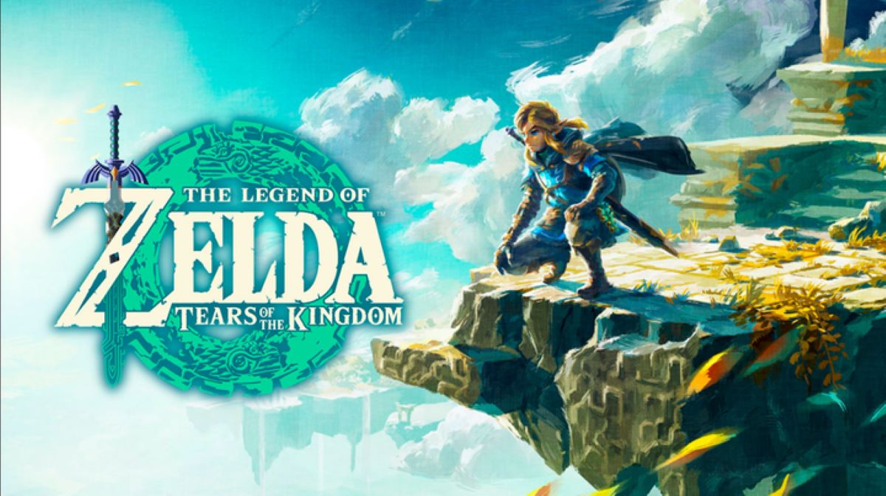
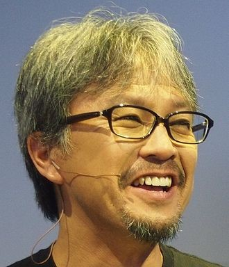
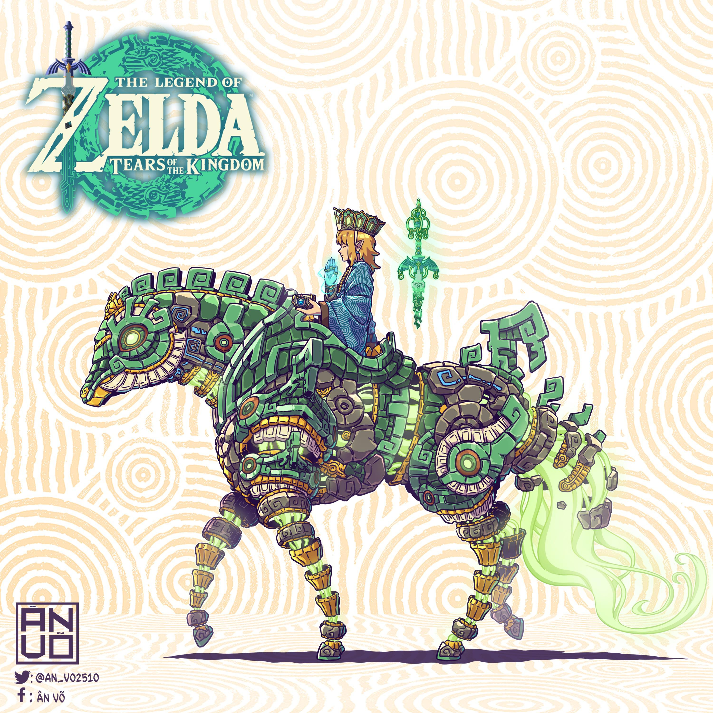

Tear of KingdomThe Legend of Zelda: Tears of the Kingdom is an action-adventure game developed and published by Nintendo for the Nintendo Switch in 2023. The sequel to The Legend of Zelda: Breath of the Wild, Tears of the Kingdom retains aspects from it, including the open world of Hyrule, which has been expanded to allow for more vertical exploration. The player controls Link as he searches for Princess Zelda and fights to prevent the Demon King from destroying the world.
Tears of the Kingdom was conceived after ideas for Breath of the Wild downloadable content had exceeded its scope. Its development was led by Nintendo's Entertainment Planning & Development division with Breath of the Wild director Hidemaro Fujibayashi and producer Eiji Aonuma reprising their roles. A teaser was shown at E3 2019 with a full reveal at E3 2021. Tears of the Kingdom was initially planned for release in 2022, before being delayed to May 2023.
Tears of the Kingdom received critical acclaim for its open world and its focus on exploration and experimentation. It sold more than 10 million copies in its first three days of release and over 19.5 million copies by September 2023, making it one of the best-selling games on the Nintendo Switch.
Game Developer
Eiji Aonuma (formerly known as Eiji Onozuka, born March 16, 1963) is a Japanese game designer and game producer.Born in Nagano Prefecture, his blood type is type A. Currently working for Nintendo, a famous Japanese game company, as deputy director of the planning and production headquarters. He is best known for his work on the Legend of Zelda series for the Nintendo 64 and beyond. His nickname is "Uncle Bearded".
What Critics Say
Tom Marks of IGN praised the addition of the sky islands and caves as "massive" and "brilliant complements to the more traditional surface activities". He also complimented the story as distinguishing itself from typical plots of Zelda games.
Edwin Evans-Thirwell of Eurogamer praised the seamlessness of the "loop between underworld and sky", writing that while the "caverns aren't always worth the toil of discovery, none of the sky islands feel dispensable", praising the "irresistible, toylike specificity" of their design.

On the differences from Breath of the Wild, Steve Watts of GameSpot praised the "subtle ways" the world had changed, saying that "not everything is exactly the same or where you'd expect it to be, and the map is marked with myriad opportunities for exploration and curiosity".
Game Informer's Kyle Hilliard "didn't get the same goosebumps exploring Hyrule" as he did from Breath of the Wild, but nevertheless "adored returning to Hyrule with all new tools."